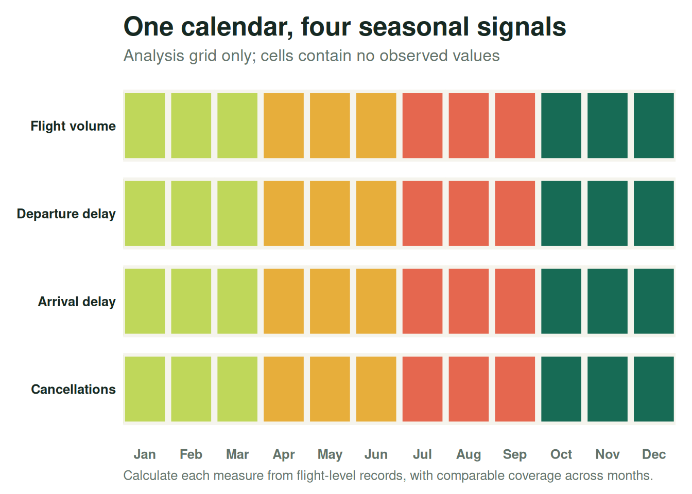
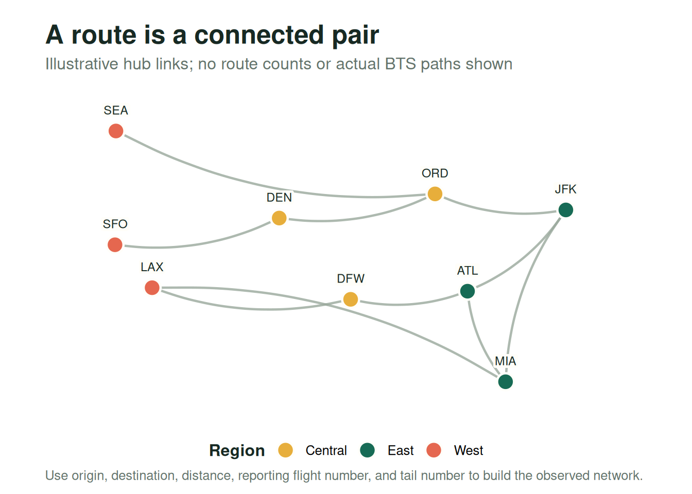
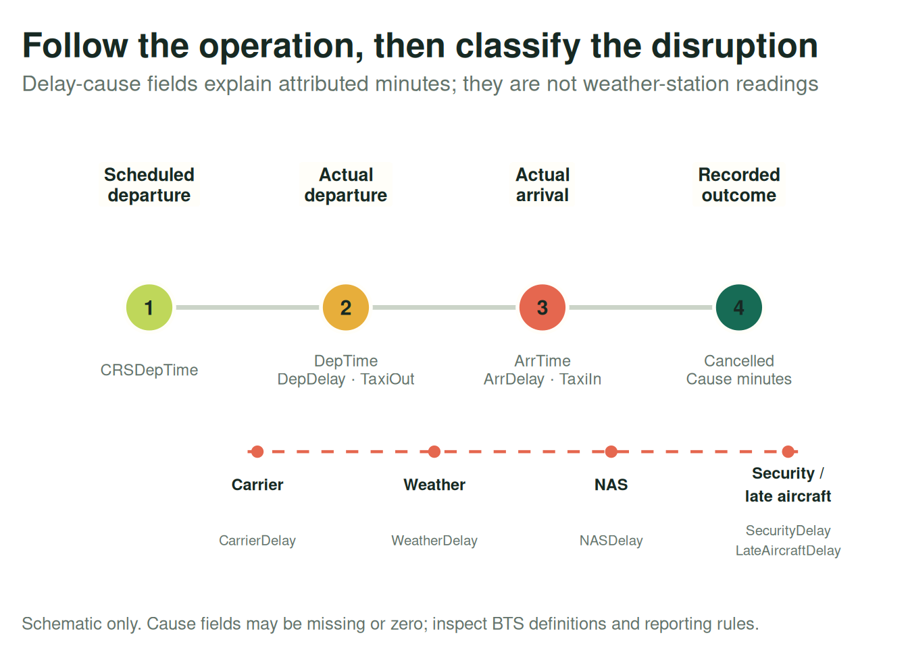

Flight Patterns Across the Year
A public-data plan for seasonal volume, delays, and network effects
1 Research brief
Best starting point: the U.S. Bureau of Transportation Statistics (BTS) Airline On-Time Performance dataset. It is the closest single public source to the temporal, route, and operational fields in this project. Treat a flight as one row, keep these variable groups together as a readable schema, and analyze them jointly.
The graphics below are analysis schematics, not empirical findings: no flight records have been downloaded or summarized. They show how to organize the questions and fields before calculating seasonal patterns.
ImportantResearch question
How do commercial flight volume and operational reliability vary by season, route, and departure window, and when do disruptions at major airports appear in later flights on the same aircraft or carrier network?
2 Public data sources
| Source | What it offers | Fit and caveats |
|---|---|---|
| BTS Airline On-Time Performance | U.S. reporting-carrier flight records with scheduled and actual times, airport pair, distance, delays, taxi times, cancellations, and delay-cause fields. | Recommended core. Strongest match for the requested fields and multi-year seasonality. It is U.S.-focused; inspect the selected months, reporting coverage, field definitions, and missing values before analysis. |
| OpenSky Network data | ADS-B surveillance data such as observed aircraft states and trajectories, subject to access and dataset terms. | Useful for studying observed movement or validating flight paths, but not a drop-in replacement for BTS schedules, cancellation reasons, or delay-cause minutes. The supplied “OpenSky” URL points to Aviationstack, not OpenSky. |
| Kaggle flight dataset supplied in the prompt | A community-hosted flight dataset. | The supplied page returned 404 when checked on 2026-11-02. If it becomes available, verify its original source, time span, definitions, and redistribution terms before using it. |
| Aviationstack API | API-based flight and aviation data. | This is the service at the supplied second URL, not OpenSky. Confirm the plan’s historical date range, fields, and reuse limits; API access and historical coverage may be plan-dependent. |
| NOAA Integrated Surface Database | Quality-controlled surface weather observations from stations around the world. | Add as a weather-measurement source. Match airport/station and observation time carefully; it is not the same thing as BTS’s attributed WeatherDelay minutes. |
2.1 Recommended dataset design
Start with BTS monthly extracts for a consistent multi-year period, for example 2019–2024. Keep the original flight-level table as the source of truth; organize variables into the three conceptual groups below rather than splitting them into separate datasets. Add a weather table only when needed, joined by airport and timestamp. Record each source’s download date and selected months.
| Idea | Candidate BTS fields | What to examine |
|---|---|---|
| Temporal values | FlightDate, Month, DayOfWeek, CRSDepTime, DepTime, CRSElapsedTime |
Flights by month/day, departure windows, seasonal delay and cancellation rates. |
| Route variables | Origin, Dest, Distance, Flight_Number_Reporting_Airline, Tail_Number |
Airport pairs, route distance, carrier/flight comparisons, and aircraft rotations. |
| Operation variables | DepDelay, ArrDelay, TaxiOut, TaxiIn, Cancelled, CancellationCode, CarrierDelay, WeatherDelay, NASDelay, SecurityDelay, LateAircraftDelay |
Delay distributions, cancellation rates, ground time, and attributed delay causes. |
The precise available columns can vary by extract and year. Confirm names in the downloaded BTS schema before writing the import step. BTS delay-cause fields describe attributed delay minutes; they are not direct meteorological observations. For a weather-based model, join weather observations (or forecasts available at prediction time) separately.
3 1. Temporal values: find the seasonal shape
Compare full years month by month, then break results out by day of week and scheduled departure window. Use flight counts for volume and rates or distributions for reliability: a busy month and a delay-prone month are different findings. Scheduled departure time is often recorded in local airport time, so normalize time zones and daylight-saving transitions before joining weather observations.
Useful comparisons: monthly scheduled flight count; median and 90th-percentile departure/arrival delay; cancellation rate; and all of these by departure-time window. Compare like-for-like years, since a single year’s holiday calendar and disruptions can distort a seasonal pattern.
4 2. Route variables: put airport pairs in context
The route is the Origin–Dest pair, not either airport in isolation. Distance helps stratify comparisons, while flight number and tail number support carrier and aircraft-rotation questions. The sketch below uses representative U.S. hubs only to illustrate a network view; its links are not claims about observed BTS traffic.

Useful comparisons: seasonal volume and delay by route; compare routes within distance bands; and trace consecutive legs by tail number to test whether an inbound disruption is followed by a late outbound flight. A tail number is not a permanent person- or aircraft-level key across all time, and aircraft rotations need date-aware sequencing.
5 3. Operation variables: separate outcomes from causes
Departure delay, arrival delay, taxi-out/in, cancellations, and delay-cause minutes describe different stages or outcomes. Keep cancellation records in the denominator when calculating cancellation rates; missing arrival or delay values on a canceled flight are not zero-minute outcomes.

For delay prediction, define when the prediction is made and only use inputs available then. Do not feed actual departure/arrival times, realized delay, or post-flight cause fields into a model meant to predict delay before departure; that leaks the answer. Use a chronological train/test split, and report performance by season, airport, and carrier.
6 Analysis plan
- Download matching BTS monthly extracts and document the date span, schema, and reporting coverage.
- Parse time fields carefully; distinguish missing, canceled, diverted, and zero-delay records.
- Plot monthly flight counts, cancellation rates, and robust delay summaries, with day-of-week and scheduled-departure-window breakdowns.
- Add NOAA station observations for weather features, converting airport-local scheduled times to UTC and checking station proximity and coverage.
- For network propagation, order flights by tail number and timestamp; test whether disruption at an inbound origin predicts the next leg’s delay after controlling for season, route, carrier, and airport.
- Evaluate predictive models with time-ordered splits and features that would genuinely be available at the prediction moment.
7 Sources
- BTS, Airline On-Time Statistics and Delay Causes.
- OpenSky Network, Data.
- Kaggle, Flight Dataset supplied in the project prompt (page returned 404 when checked 2026-11-02).
- Aviationstack, Flight API.
- NOAA NCEI, Integrated Surface Database.